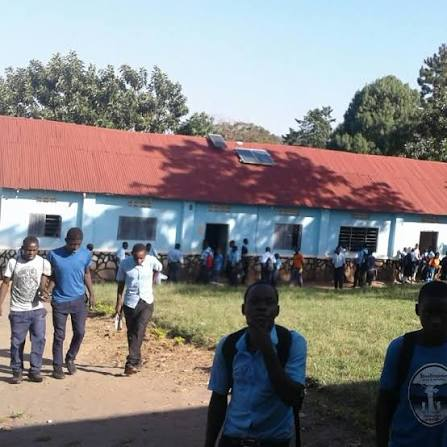

01Build strong foundations
Lower Secondary
A supportive start to secondary learning, where core knowledge grows alongside confidence, curiosity, and good study habits.
Explore the programmeA new term, a new opportunity. Welcome to Busujju Secondary School, Mityana, Zigoti.
Explore admissions BUSUJJUSECONDARY SCHOOL · MITYANA, ZIGOTI
BUSUJJUSECONDARY SCHOOL · MITYANA, ZIGOTI
Students use the school ID or username given by a teacher. Teachers can sign in or request an account.
Use the school ID or username given to you by your teacher, together with your password.
Requests are reviewed by an existing teacher. You cannot access student records or enter marks until your account is approved.
| Subject | Assessment | Score | Out of | Date entered |
|---|
| Student | Username | School ID | Class |
|---|
At Busujju Secondary School in Mityana, Zigoti, every learner is known, challenged, and encouraged to make a difference.
Education should open doors, spark questions, and help young people discover what they can contribute to the world.
We bring rigorous learning and a genuine sense of belonging together. Here, students are supported to find their strengths, build their confidence, and take their next steps with purpose.
Get to know us

Good schools do more than teach subjects. They give students the knowledge, confidence, and care to imagine a bigger future — and the tools to pursue it.
At Busujju, strong relationships are at the heart of learning. We create space for new ideas, celebrate progress, and encourage every student to bring their whole self to our community.
Meet our school communityKnowledge opens doors. Skills help you walk through them. Our approach brings both together — with high expectations, thoughtful guidance, and room to explore.

01A supportive start to secondary learning, where core knowledge grows alongside confidence, curiosity, and good study habits.
Explore the programme 02
02Deeper study and thoughtful subject choices help learners prepare for further education, meaningful work, and a changing world.
Explore the programme 03
03Communication, teamwork, creativity, and responsible leadership develop through practice, reflection, and participation.
See student lifeExplore the example class timetable and subject directions below. Sign in through the school portal at the top of the page to view or manage examination results.
Uganda's lower-secondary curriculum (S1–S4) builds a broad foundation through compulsory learning areas and learner-selected subjects. At upper secondary (S5–S6), learners choose subject combinations offered by their school and aligned with current NCDC and UNEB requirements.
Possible upper-secondary subjects to discuss with the school:
Possible upper-secondary subjects to discuss with the school:
For S1–S4, confirm the school's approved compulsory and elective subjects. For S5–S6, check current subject combinations, prerequisites, and assessment guidance directly with Busujju SS.
Education is not only preparation for life.
It is the beginning of a life of possibility.
Some of the most important learning happens when students make, play, perform, serve, and discover together. Find your people — and your next passion.
Get involved

Choosing a school is a big decision. We are here to help you understand the journey, ask the right questions, and find out whether Busujju is the right fit for your family.
Say helloTell us a little about your learner.
→Get to know usAsk questions and learn about our school.
→Plan your next stepOur team will help explain what comes next.
→
“A school should help you see what is possible — and believe you can get there.”
A thought we carry with us
Learning flourishes when students feel safe to try, encouraged to persevere, and proud to be themselves. Our community of teachers, staff, families, and learners is here to make that possible.
Teachers who careGuidance that sees the person behind the progress.
Families who belongPartnership makes a stronger school community.
Students who leadYoung people encouraged to contribute and grow.
 School leadership
School leadership
Head Teacher · Busujju Secondary School
Mityana, ZigotiOur communityKindness shared between classes, a new idea in the making, a friend cheering you on. Every day brings a reason to belong.
Read the storyLearningCuriosity helps learners make connections, think deeply, and see familiar subjects in a new light.
Explore learning Student life
Student lifeShowing up for each other helps students build courage, resilience, and friendships along the way.
Discover student lifeStill wondering about something? Send us a message — we are happy to help.
We are a learning community committed to helping young people grow academically, personally, and socially. We value curiosity, integrity, belonging, and the pursuit of each learner's potential.
Use the enquiry form on this page to get in touch. Share the year or level you are asking about, and our team can help you understand the next steps.
Ask about learning, student support, school culture, activities, and how families stay connected. Most importantly, ask what helps your learner feel ready to thrive.
Family partnership is an important part of a strong school community. Contact us to learn about ways families can connect and contribute.
Send a message through our contact form below. Include your preferred way to hear back, and we will follow up using the details you provide.
Whether you are a prospective family, a current learner, a former student, or a friend of the school, we would be glad to hear from you.
Email the schoolreynoldsemstone@gmail.com
Call or WhatsApp+256 767 815 709Message us on WhatsApp ↗
Find our communityMityana, Zigoti
When we're hereSchool days, during term time